One launch.
Keep building.
Microsoft 365 Copilot.
Cowork. Copilot Studio.
60 minutes · from a sourced brief to an editable app and a shared assistant.
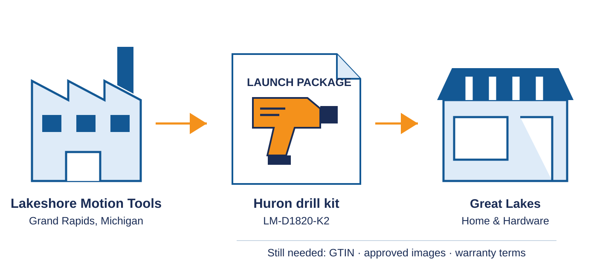
Blake Beckemeyer · Detroit · November 10, 2026
Talk A · opening, 1 minute. Start this talk independently. State the promise: follow one routine product launch through three surfaces, preserve the reusable work, and be explicit about what each platform does not carry forward. Do not promise seamless conversion or show Foundry as a continuation. Share only this audience window; keep Presenter view on a private display.
Draft it. Build it. Extend it.
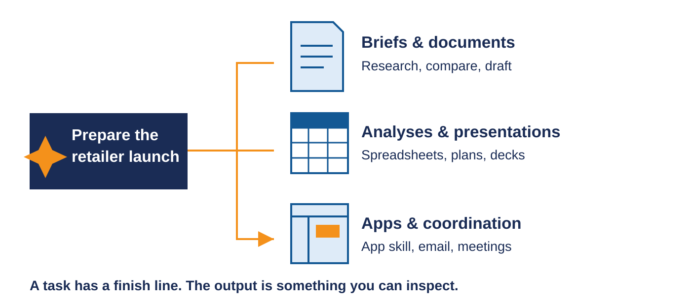
Talk A · context, 2 minutes. Leaders: notice the reason to add capability, not a feature checklist. Makers: notice the tangible brief and review app. Developers: notice the same source opened in an IDE and a small reviewable diff. Studio then demonstrates maker-selected models and supported web delivery. All data is fictional; illustrated artifacts are not captured service results.
A product launch has a real destination
Talk A · context, 2 minutes. The second product is the reuse test: SKU, category, holder, speed, torque, mass and price change. Both intentionally lack GTIN, approved imagery and warranty terms. The correct result remains needs_review.
Better context, through four IQ layers
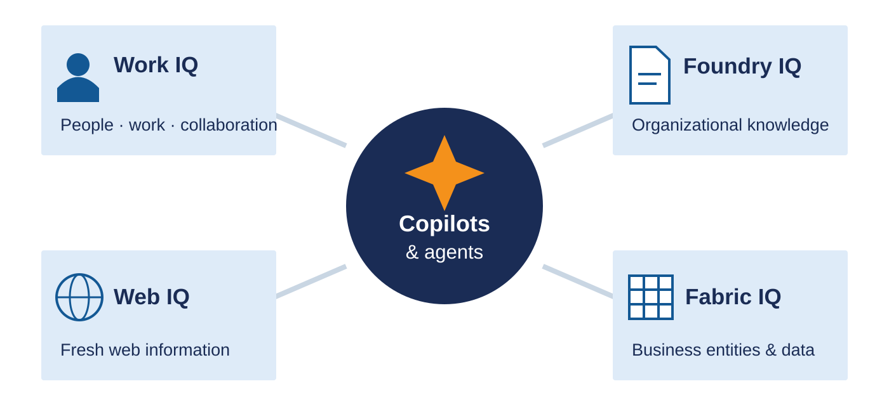
Talk A · M365 Copilot, 3 minutes. Frame the first chapter around the user's existing work surface, not a taxonomy lecture. Explain that access still follows the user and configured data boundaries. Citations help inspection; they do not prove every claim.
Give the repeated job a reusable brief
Product Launch assistant
Approved facts.
Retailer requirements.
One repeatable request.
Draft → inspect → reuse.
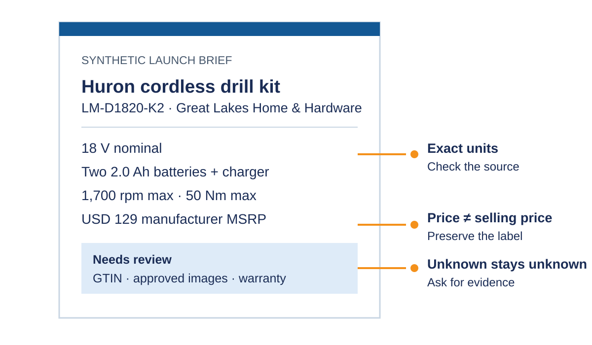
Talk A · M365 Copilot, 3 minutes. Describe the Product Launch agent as the focused repeatable assistant used in this scenario, not as the only way to do the task. It uses readable text knowledge; the repo's local JSON files are not automatically indexed. Do not promise document export unless the actual route is rehearsed.
Ask for the launch brief—then inspect it
“Prepare the LM-D1820-K2 launch brief. Cite the facts. Flag what’s missing. Don’t invent values.”
Talk A · M365 Copilot, 4 minutes. Run this only in a prepared, authorized environment. Inspect one source citation and one exact numerical claim. If live generation is unavailable, show the deterministic local reference explicitly as a reference—not as an agent response.
Garbage in. Garbage out.
quality→Draft
quality
Correct units.
Correct price label.
Visible unknowns.
Talk A · M365 Copilot, 2 minutes. Ask the room what they would need to trust before reusing a generated listing. Keep the answer anchored in factual checks and visible gaps. This synthetic checklist is not product certification or safety assurance.
Delegate the outcome, not forty prompts
Talk A · Cowork, 2 minutes. Use the current documented flow: Cowork Home includes a chat input and recent tasks; suggested prompts can include Build an app. This talk is 15 minutes, not a complete Cowork course. Keep exact UI details flexible until the presenter's Frontier account is visually rehearsed.
The next deliverable is an app
Not another answer to copy.
A product selector.
A fact sheet.
A missing-field view.
App skill · Frontier preview
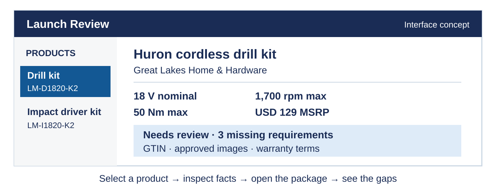
Talk A · Cowork, 3 minutes. Point out the Home composer, recent task list, task-progress updates, attachment options, action approvals and output panel. Microsoft documentation says task-specific interfaces can vary; do not narrate a control that is not visible in the presenter tenant. App-building steps and acceptance details are in the guide.
Demo: build the launch review experience
“Build a read-only review app. Keep exact facts and visible gaps.”
Talk A · Cowork, 6 minutes. Live demo target: show the current Home composer, approved inputs, task updates and an actual generated app. Then test both product selections and one output. Do not assert the app skill can publish or persist workflow state. If the preview/build fails, name the failure and show a clearly labeled local reference only. The detailed prompt and acceptance checks are in the guide.
Open the same app in your IDE
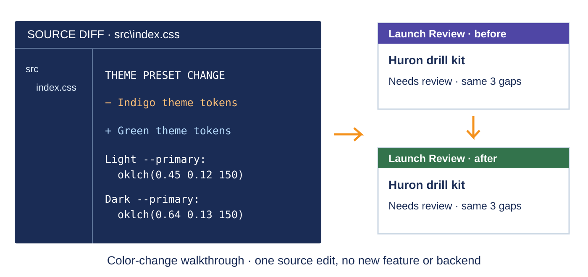
Talk A · Cowork, 4 minutes. User-directed codevelopment proof: only change a color, not add a new feature or backend. Open the already-retrieved app checkout and src\index.css; use the actual theme values in the lifecycle guide. Show before, theme-token diff and Local Play after. Prepare auth, dependencies and source access before stage; no publish/deploy required for this local edit. Cowork sensitive actions still require actual approval. The App skill is Frontier preview; rehearse the tenant UI and do not claim a live result without running it.
The assistant works. Now operate it.
Why Studio?
Environment-based security.
DEV / TEST / PROD ALM.
Deeper actions and workflows.
More delivery channels.
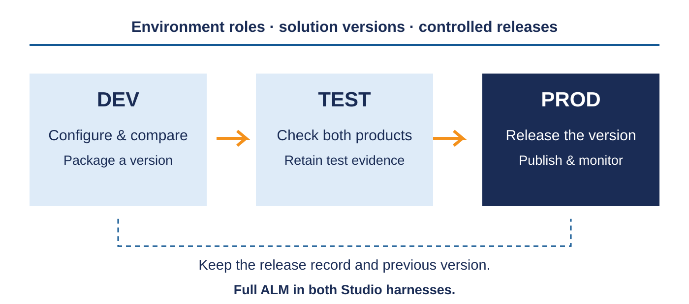
Talk A · Copilot Studio, 3 minutes. The move is from a useful assistant to an operated business capability. Agent Builder already supports multiple editors and organization-wide sharing; neither is an exclusive Studio benefit. Studio adds environment-based roles, full DEV/TEST/PROD ALM in both harnesses, deeper business actions and workflows, and supported delivery channels. Our selected new-harness demo keeps the same task and sources, compares models, then inspects a prepared release and web delivery. No new custom MCP, Dataverse registration or app-to-agent conversion. Do not imply those additional capabilities are all built in this demo.
Develop freely. Release deliberately.
Talk A · Copilot Studio, 3 minutes. Full ALM is supported in both Studio harnesses; do not frame it as standard-only. Explain environment separation, role-scoped authoring, solution packaging, testing and controlled promotion. A pipeline deployment and publication to a channel are distinct steps; validate target connections and knowledge access as part of release. Use the prepared agent's real environment, solution version and release evidence rather than inventing resource names or success statuses. This is a lifecycle walkthrough, not a from-scratch pipeline build.
Demo: choose the agent’s model in Studio
“For LM-D1820-K2, what’s missing for Great Lakes Home & Hardware?”
Keep unknowns unknown.
Repeat with the second model.
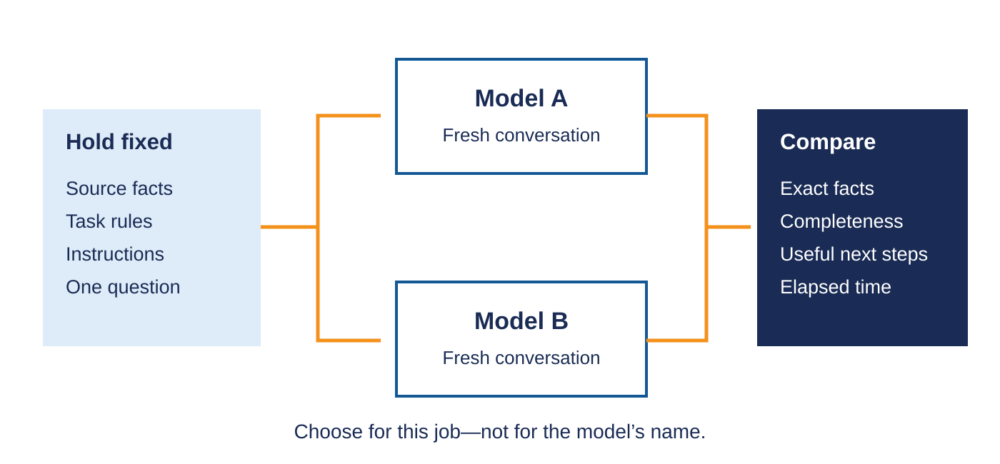
Talk A · Copilot Studio, 4 minutes. Demonstrate the maker's model selector, not a chat user's transient model choice. Microsoft documents Build, Model, selection, Save. Use the same synthetic request in each fresh Preview session and retain both outputs. Show the real allowed model names; do not enable providers, publish, spend or change admin policies without separate authorization. If only one model is permitted, show the selector honestly and use previously captured, labeled results for comparison. No live model call was made by authoring these slides.
A better answer becomes a tested release
Show the version, test evidence and target—not just “it worked in Preview.”
Talk A · Copilot Studio, 5 minutes. Spend two minutes comparing actual model outputs against exact facts, all three gaps, actionable requests, no invented values and observed elapsed time. Repeat the impact driver to catch cross-product leakage. Spend three minutes inspecting the prepared solution version, DEV/TEST/PROD targets, test record and deployment history or pipeline. Show actual evidence only; do not create environments, change roles or deploy during slide authoring. Target connections and source access need configuration and verification. Keep the previous release and a reviewed recovery path. If preparation is incomplete, show the lifecycle diagram as a design, never claim a completed promotion.
Put the assistant where colleagues need it
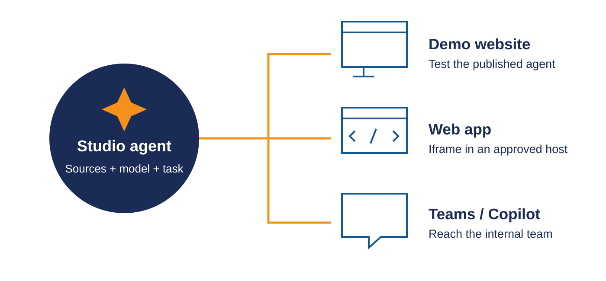
Talk A · Copilot Studio, 3 minutes. Current GitHub Copilot-harness channels document Demo website, Web app via iframe, Teams and Microsoft Copilot. Show actual Channels configuration and a separately authorized prepared web preview. Demo website is for testing, not a production-security design. Confirm actual authentication, sharing and embedding support in the host. Do not claim the Cowork managed app accepts an iframe until that host has been verified; the standalone web preview is sufficient. No publication is performed by editing these slides. MCP/A2A are unnecessary and rollout-limited. Source: Microsoft Learn agents-experience/publication-channels-overview.
The handoff is source—not a restart
Keep the facts. Keep the app. Review the diff.
Talk A · ownership, 3 minutes. Replay the exact continuity: facts to brief, files to Cowork app, source to IDE color change, same task and facts to Studio model comparison and web delivery. Assets are reused deliberately, not automatically synchronized. The code diff is an illustration of the documented theme edit; show the actual generated app and actual diff during rehearsal. Do not claim app import into Studio or shared conversation history across channels.
Multiple creation paths. A managed app lifecycle.
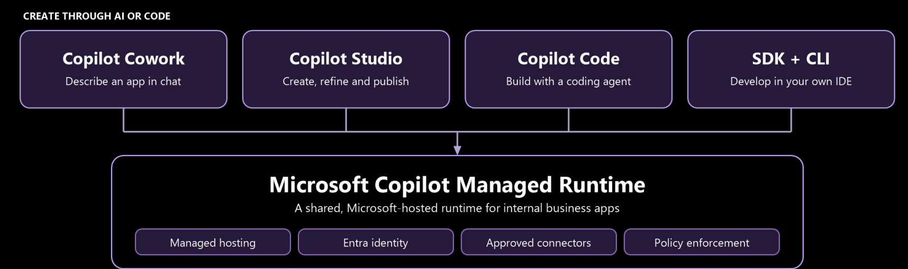
Talk A · ownership, 2 minutes. Figure excerpt from Code Meets Low Code: Building with Copilot Managed Runtime and Power Platform, Elaiza Benitez and Rami Mounla, PPCC 2026, PDF page 23. The source labels the full figure conceptual and preview; the caption retains that boundary. The bounded crop shows creation paths through managed runtime, omitting the lower governance endpoints for projector legibility. It is not conversion of our Studio agent into the Cowork app. Distinguish app source lifecycle from Studio agent configuration/publishing. Publication, sharing, connectors and host embedding require separate verification and authorization. Source filename, hash and crop are in the visual register.
Talk A · finish at 60 minutes
What would you reuse first?
What would you start in Copilot—and where would you extend it?
Better inputs · an app you can edit · an agent you can govern and release
Talk B is a separate 30-minute Foundry session →
Talk A · questions, 5 minutes. Take questions on M365 Copilot, Cowork, the new Studio harness and continuity. Protect the stop time. Do not make Talk B depend on this audience, app, artifacts or any Studio connection.
Keep the agent.
Extend the capability.
From Copilot and Studio to a Foundry-hosted specialist.
M365 Copilot
Work with product knowledge.
Cowork
Turn that work into an app.
Copilot Studio
Govern and deliver the conversation.
Blake Beckemeyer · Detroit · November 10, 2026 · 30 minutes
Talk B · recap, 3 minutes, clock 00:00-03:00. Reset the timer. Briefly recap the previous talk for newcomers: sourced product brief, editable review app, governed Studio agent. These are roles in our story, not exclusive product capabilities. Nothing is being thrown away. Today we add a developer-owned specialist that Studio can call. The lamp bundle is a separate synthetic example, not the drill's next production step; it needs no earlier demo state. No conversion or shared session is implied.
Why add Foundry?
We want to own the processing code—not rebuild the conversation.
A reusable specialist behind the experience we already have.
Talk B · why Foundry, 4 minutes, clock 03:00-07:00. Our requirements are custom parsing, deterministic reconciliation, versioned dependencies and a reusable hosted boundary. Studio can process documents and invoke code too; we are choosing developer ownership, not claiming a feature is impossible elsewhere. A direct model API plus code is also valid. Hosted Agent Service gives this implementation a deployed code runtime and Activity endpoint callable by our prepared Studio agent. Existing briefs/apps remain intact; no rip and replace or automatic integration of Talk A assets is claimed.
Foundry's reach. Our agent's job.
Foundry platform highlights
- Model choice and multimodal inference
- Prompt agents or hosted custom code
- Tools and connected services
- Evaluation, tracing and safety controls
Our hosted specialist
- Python runtime · deployed version 2
- One model call across three source types
- Code-owned rules and source evidence
- Studio in → JSON review record out
Platform capabilities vary by model, region and agent type. Evaluations, tracing UI and guardrails are not demonstrated or configured by this example.
Talk B · highlights, 4 minutes, clock 07:00-11:00. Left column is a platform map, not a checklist of features enabled in our deployment. Reference Microsoft Learn Foundry Agent Service overview. Right column is actual scope: supplier-catalog-specialist v2, gpt-6.1-sol, fixed FC-03 PDF/workbook/image, shared Python processor, Activity protocol and native Foundry connection. The processor parses workbook cells, asks the model to interpret evidence, then reconciles and validates in code. No autonomous planning loop, arbitrary upload, CSV export, review UI, approval or publishing. Do not imply Foundry evaluations or guardrails were configured. Transition immediately to the product.
Demo: three sources, one review record
Inspect the sources.
Meet the hosted agent in Foundry.
Call it from Studio.
Read the actual result.
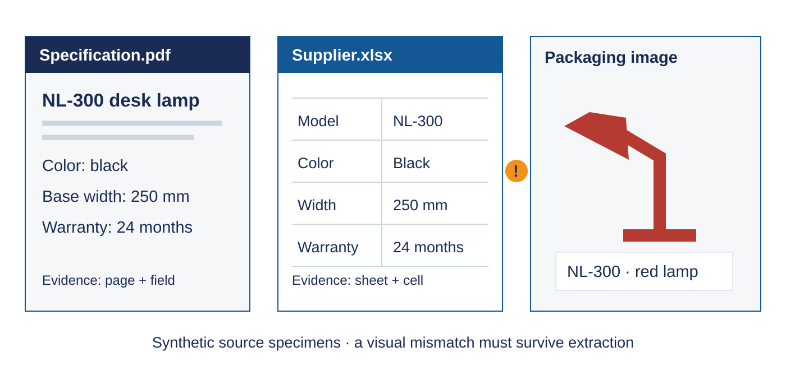
Talk B · live demo, 14 minutes, clock 11:00-25:00. Leave the slides for the full block. 11:00-13:00 open the three FC-03 sources and establish black/black/red. 13:00-16:00 show Foundry project dtw-tool-demo-b571/detroit-catalog, hosted specialist v2, model gpt-6.1-sol and deployed configuration. Show existing code in the editor: Activity adapter, process_bundle, reconciliation/validation. Do not deploy or edit security. DTW deployment, the saved binding and the approved temporary BotService policy are verified. The policy went live November 10 at 19:18:37 UTC without changing source/package, environment, identity, Activity, routing or publication. The user reports the demo working under this exception, but no successful tool JSON/run ID or field-level capture was supplied; caller-tenant propagation is not repaired. 16:00-18:00 only after a successful field-checked rehearsal, use DTW Tool Demo and Supplier Catalog Specialist DTW once with task input process FC-03-NL300. At 60 seconds without usable result switch to a timestamped real rehearsal capture if one exists; do not duplicate or imply cancellation. 18:00-23:00 inspect actual tool JSON: real runId, NL-300, needs_review, color null, all three color observations, width 25.0 cm, warranty 24 months, published false. No expected fixture in model context. 23:00-25:00 connect the result to the code: models interpret, code normalizes and keeps conflicts unresolved. This is one synthetic bundled case, not arbitrary ingestion or a review app. If time remains, explain returned metadata; do not detour into SDK history, an unbuilt benchmark or future cases. Rehearsal capture and field checks remain prerequisites.
Extend the system. Keep what works.
Keep
The user experience and business conversation in Studio.
Add
A versioned, code-owned specialist hosted in Foundry.
Return
Evidence-linked data—not another unsupported answer.
Choose the boundary your team needs to own.
Talk B · takeaway, 2 minutes, clock 25:00-27:00. One sentence per column, not another pipeline walkthrough. A model API may be enough; this hosted implementation is useful when the reusable code boundary earns its operating cost. The repository default is AzureRbac with Entra isolation plus BotServiceRbac. The separately approved reversible DTW-only BotService exception is now live for this synthetic demo: channel validation remains, but additional Bot-user authorization is removed. It does not make the endpoint anonymous/public or repair caller-tenant propagation. Check the specialist guide for the actual processing outcome. The source updater deliberately refuses legacy mode; restore BotServiceRbac before normal deployment, real supplier data or production. Broader tests, reviewed access, durable operations and monitored costs remain prerequisites. SDK failure history and future evaluation design remain optional guide material, not more slides.
What would you add
without replacing?
Keep the experience.
Add the specialist.
Talk B · questions, 3 minutes, clock 27:00-30:00. The full close block is 00:25-00:30. Take questions on when custom hosted code is useful, the Studio delegation and returned evidence. If asked about evaluation or debugging, use the guide's optional engineering references rather than restarting the talk. No benchmark or production-readiness claim follows from this one run. Stop at 30 minutes.